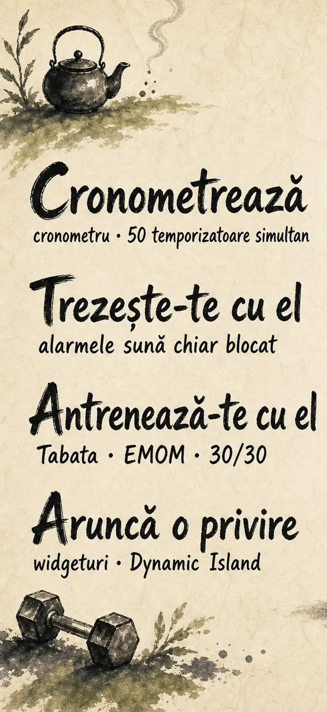
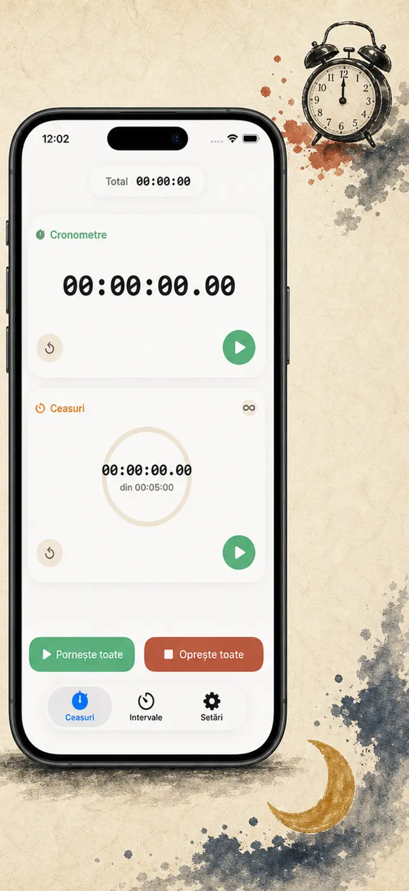
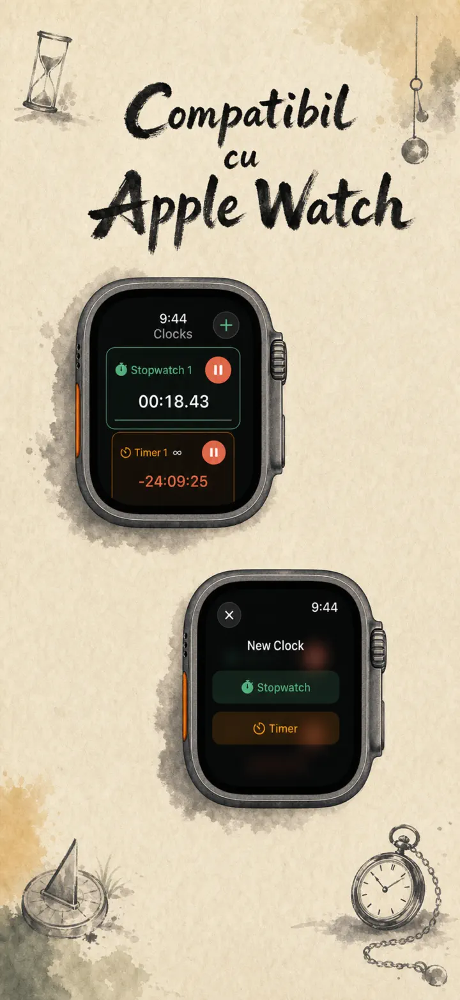
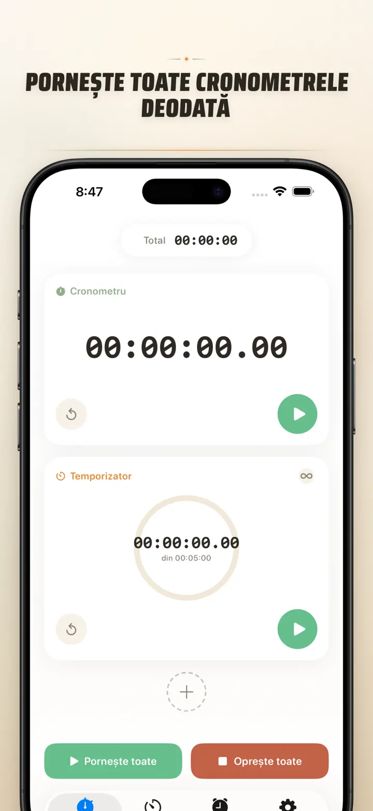
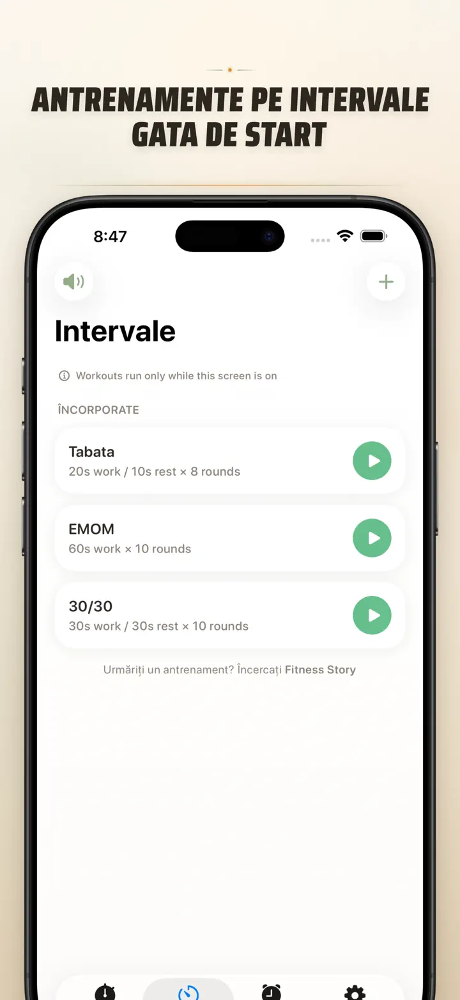
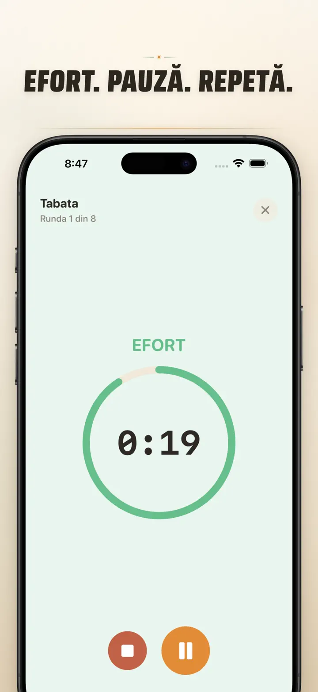
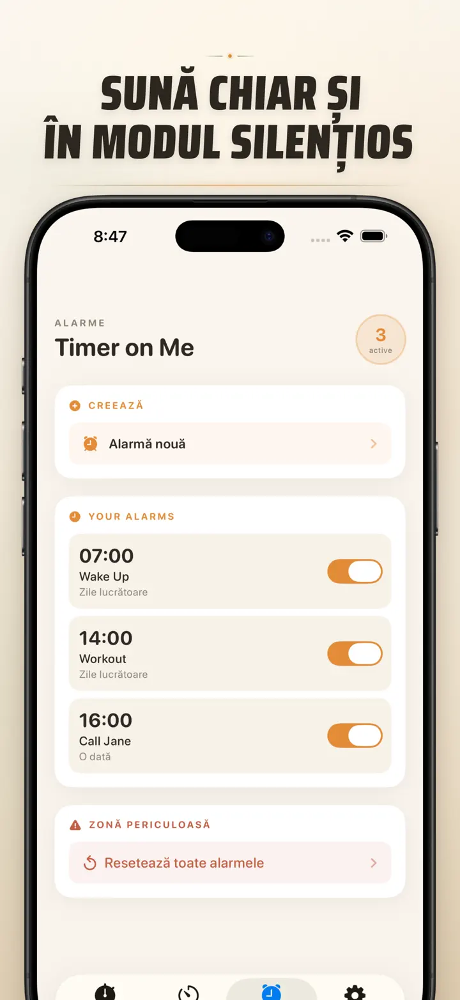

Timer on Me
Timer, Alarmă, Cronometru HIIT
Acum cu alarme cu dată: setează o alarmă unică pentru orice dată și oră, cu alarme recurente, 50 temporizatoare, HIIT & Tabata și Apple Watch.
Descarcă din App Store
Despre aplicație
Timer on Me este multi-timerul și cronometrul tău pentru iPhone, iPad și Apple Watch. Până la 50 de timere independente în același timp, antrenamente cu intervale precise și alarme care chiar sună — chiar și cu iPhone-ul blocat sau aplicația închisă.
ALARME
- Alarme de trezire și mementouri cu etichete personalizate și programare pe zile ale săptămânii
- Cu tehnologia AlarmKit — sună chiar și cu iPhone-ul blocat sau Timer on Me închisă
- Snooze configurabil (3 / 5 / 9 / 15 / 30 de minute) sau fără snooze
- Alege dintre sunetele integrate sau importă-ți propriile sunete
- Activare/dezactivare cu o atingere din fila Alarme dedicată
ANTRENAMENT ȘI INTERVALE
- Presetări gata făcute Tabata, EMOM și 30/30 — două atingeri și pornești
- Editor personalizat de intervale: muncă, pauză și runde în minute și secunde
- Mod de antrenament pe ecran complet, cu schimbare de culoare pe fază și opțiune silențioasă
- Pauză, sari peste și reia în mijlocul sesiunii fără să pierzi progresul
APPLE WATCH
- Aplicație nativă watchOS reală, nu doar o oglindire a telefonului
- Mai multe cronometre și timere rulând pe încheietură simultan
- Cronometru cu precizie la sutimi de secundă
- Complicații dedicate pentru cadran cu pornire printr-o atingere
- Funcționează singur, chiar și fără iPhone-ul în apropiere
50 DE TIMERE SIMULTAN
- Până la 50 de timere și cronometre independente într-o singură sesiune
- Pornește, oprește și resetează individual sau în grupuri
- Repetare automată pentru runde ciclice
- Timerele continuă după zero pentru a urmări timpul suplimentar
- Bare de progres colorate: galben la 50%, roșu la 10%
- Trage pentru a le ordona, dă-le nume proprii
ALERTE DE ÎNCREDERE
- AlarmKit: alarmele sună chiar și când iPhone-ul e blocat sau aplicația închisă
- Dynamic Island și Live Activity — progresul dintr-o privire
- Widgeturi pentru ecranul principal: mic, mediu, mare
- Sunete integrate: clopoței, cântec de păsări, telefoane vintage
- Atinge pentru previzualizare înainte de a alege
- Mod „Păstrează ecranul pornit" pentru sesiuni lungi
PERSONALIZEAZĂ ȘI PARTAJEAZĂ
- Afișează sau ascunde zecimale, totaluri și procente
- Salvează și suprascrie presetările, recheamă-le cu o atingere
- Exportă ca CSV, JSON sau text simplu
- Partajează cu colegi, elevi sau antrenor
PENTRU iPhone, iPad ȘI APPLE WATCH
- Aspect adaptabil la orice dimensiune de ecran
- Split View pe iPad
- 34 de limbi
IDEAL PENTRU
- HIIT, Tabata, CrossFit și antrenament în circuit
- Runde de box, kickbox și arte marțiale
- Pomodoro, bacalaureat, admitere și concentrare
- Cafea la ibric, ceai, ouă fierte, sarmale, mici și timp la cuptor
- Yoga, pilates, meditație și exerciții de respirație
- Repetiții de prezentări și practică la instrument
- Cursuri, ateliere și activități de grup
- Jocuri de societate și seri cu prietenii
Descarcă Timer on Me și ia în stăpânire fiecare minut — la sală, la birou sau acasă.
Politică de confidențialitate: https://masawata.net/privacy-policy.html Termeni și condiții: https://www.apple.com/legal/internet-services/itunes/dev/stdeula/
Capturi de ecran






Timer on Me
Acum cu alarme cu dată: setează o alarmă unică pentru orice dată și oră, cu alarme recurente, 50 temporizatoare, HIIT & Tabata și Apple Watch.
Descarcă din App Store